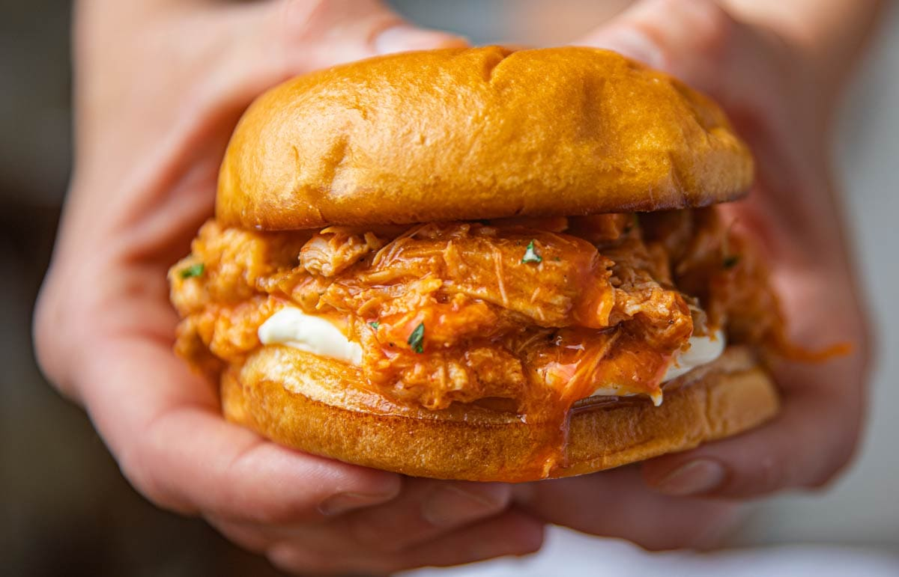

Return to homepage
Buffalo Chicken Sandwich

Description
This recipe is for my lazy cooks who wants to use minimal ingredients and basically just set and forget until its time to eat. This yummy and creamy buffalo
chicken sandwich while will take approximately six hours and 10 minutes to fully cook, it only takes 10 minutes of preparation... for six sandwiches.
Prep it, and forget it until its ready to eat. Best of all, it only takes five ingredients.
Ingredients
- 4 skinless, boneless chicken breast halves
- 1 (17.5 fluid ounce) bottle Buffalo wing sauce, divided
- 1/2 (1 ounce) package dry ranch salad dressing mix
- 2 tablespoons butter
- 6 hoagie rolls, split lengthwise
Steps
- Place chicken breasts into the slow cooker; pour in 3/4 of the wing sauce and ranch dressing mix.
- Cover and cook on Low for 6 to 7 hours.
-
Shred chicken in the cooker with two forks. Stir in butter.
- Pile shredded chicken and sauce onto hoagie rolls. Serve with remaining Buffalo sauce.
Nutrition Facts (per serving)
Calories: 578
Fat: 14g
Carbs: 81g
Protein: 31g
Credit
Website to recipe